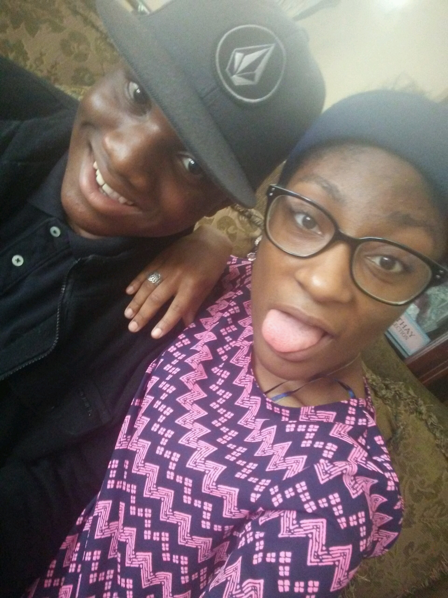

You with the sad eyes, Don't be discouraged, Oh I realize, It's hard to take courage, In a world full of people, You can lose sight of it all. The darkness inside you, can make you feel so small.
Show me a smile then, don't be unhappy, can't remember when
